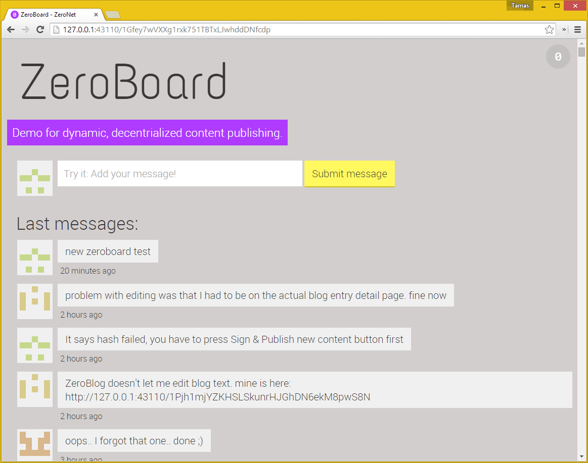
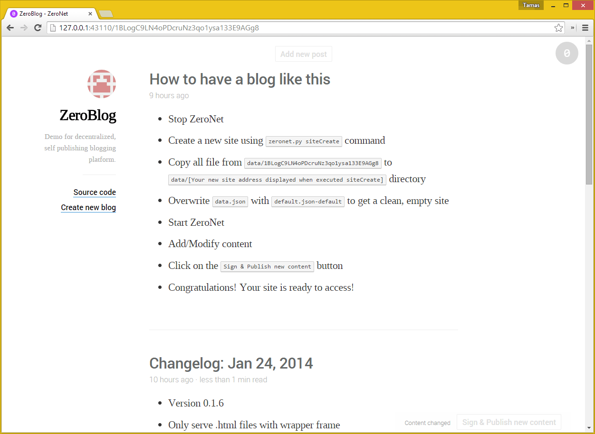
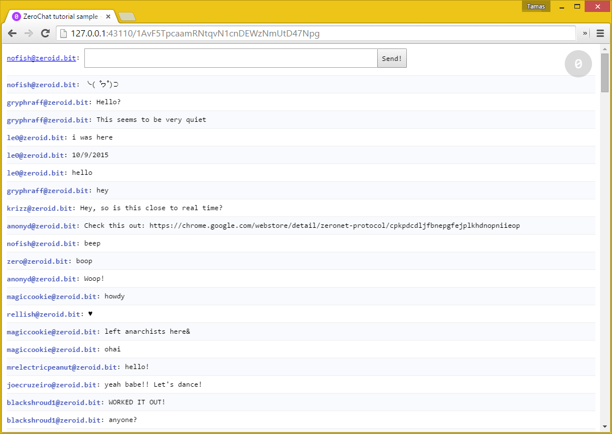

Основные сайты ZeroNet
Сайт ZeroHello
Домашняя страница ZeroNet
- Содержит список всех добавленных сайтов: название, идентификатор источника, дата изменения; - Доступные действия с сайтами: обновление, остановка загрузки, продолжение загрузки, удаление; - Копирование сайты для создания своего блога или форума; - Обновление ZeroNet в один клик при выходе новой версия.

Веб-адрес: 1HeLLo4uzjaLetFx6NH3PMwFP3qbRbTf3D
Доска объявления ZeroBoard
Простая доска объявлений, демонстрирующая возможности публикации динамического контента
- Динамические аватарка, создаваемые на основе пользовательского сессионого ключа auth_key;
- Обновления сообщений в режиме реального времени.
Принцип работы ZeroBoard
- Вы отправляете сообщение боту, принадлежаего владельцу (секретного ключа) сайта;
- Бот модифицирует файл
message.json, подписывает его с помощью секретного ключа и публикует для других пользователей; - Когда обновление сайта с вашим сообщением достигает своего адресата, это отображается в вашем браузере.

Веб-адрес: 1Gfey7wVXXg1rxk751TBTxLJwhddDNfcdp
Публичный блог ZeroBlog
Пример самоиздаваемого блога
- Встроенный редактор контента;
- Синтаксис Markdown;
- Подсветка синтаксиса кода;
- Подписание контента сайта и автоматическая публикация с помощью веб-интерфейса.
Принцип работы ZeroBlog
- Вы можете редактировать файл
data.jsonпрямо в веб-интерфейсе; - С помощью нажатия на кнопку
Sign & Publish new content(подписать и опубликовать) ZeroBlog запрашивает секретный ключ (он отображается при создании сайта с помощью командыzeronet.py siteCreate command); - Ваш ZeroNet-клиент подписывает новые и измененные файлы и публикует напрямую пользователям;
- Ваш сайт будет доступен до тех пор, пока по крайней мере хотя бы один подписчик (посетитель) находится в онлайне.
- You site will be accessible until at least 1 peer (visitor) computer is active

Веб-адрес: 1BLogC9LN4oPDcruNz3qo1ysa133E9AGg8 или blog.zeronetwork.bit
P2P форум ZeroTalk
Децентрализованный P2P форум
- Создание, изменение и удаление тем;
- Голосование в темах и сообщениях;
- Единовременная связь с владельцем сайта при получении разрешения на внесение изменений;
- Комментарии и изменения контента передается напрямую пользоватлям;
- Только вы можете подписывать и вносить изменения в ваши файлы;
- Отображение комментариев в реальном времени.
Принцип работы ZeroTalk?
- Для возможности работы с сайтом Вы должны пройти регистрацию у провайдера ZeroID и получить сертификат;
- После получения сертификата Вы сможете публиковать свой контент (сообщения, темы, голосования) для других польщователей;

Веб-адрес: 1TaLkFrMwvbNsooF4ioKAY9EuxTBTjipT or talk.zeronetwork.bit
Электронная почта ZeroMail
Распределенный веб-сервис обмена P2P сообщениями, защищенными с использованием шифрования. В целях обеспечения конфиденциальности адресатов ZeroMail использует решения BitMessage, в следствии чего получатель сообщения хранится в тайне.
- Использование схемы шифрования ECIES для приватного обмена сообщениями и симметричный алгоритм блочного шифрования AES256 для шифрования сообщений;
- При первом посещении сайта ZeroMail публикует свой открытый ключ в публичном банке данных, после чего любой пользователь может отправлять вам персональные сообщения;
- Каждый получивший письмо пытается его расшифровать, это также обеспечивает конфиденциальность, делая невозможным найти истинного получателя сообщения;
- Для снижения накладных расходов на сообщение и увеличия скорость дешифрования мы повторно использовать ключ AES, но при этом вектор инициализации IV генерируется каждый раз новый.

Веб-адрес: 1MaiL5gfBM1cyb4a8e3iiL8L5gXmoAJu27 or mail.zeronetwork.bit
Веб-чат ZeroChat
Готовый сайт для обучения создания чата, работающий в режиме реального времени без использования серверных технологий, созданный с помощью ZeroNet, содержит менее 100 строк кода и имеет следующий функционал:
- Выбор ZeroID сертификата пользователя; - Хранение сообщений в базе данных SQL; - Добавление своих сообщений и распространение напрямую пользователям чата в режиме реального времени; - Обновление сообщений в режиме реального времени.

Веб-адрес готового чата: 1AvF5TpcaamRNtqvN1cnDEWzNmUtD47Npg
Руководство ZeroBlog: Part1, Part2
ReactionGIFs
Пример сайта с мехнизмом загрузки файлов, в том числе видео-файлов, по необходимости (базовый функионал загружает все файлы сайта);

Веб-адрес: 1Gif7PqWTzVWDQ42Mo7np3zXmGAo3DXc7h